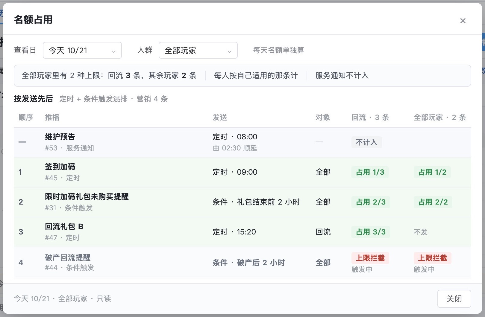

触达系统需求评审版 · 2026-10-27 · 在云端 10/27 定稿上改
评审版已按阅读顺序重排、用词改成通用说法，整体通查又修了 7 处，待你验收；运营提的 2 个功能缺口要你定
「修改上限」「名额占用」从第 1 页最前面挪到「新建推播」之后。合池、轮换位这些自造的词换成了通用说法。发布确认里那句名额说明删掉了。34 张图全部重截，字体也统一了。
2页
按阅读顺序重排：第 1 页推播、第 4 页弹窗，图和业务规则同一个顺序
2件
要你定：推播能不能点名保留、弹窗要不要加回弹出时机
01阅读顺序：先看排期、再新建、再讲控量，最后是操作纪录
第 1 页 · 按玩家分群推送
- 看排期：日历 → 定时 → 条件触发 → 停止确认
- 新建：新建推播 → 发布确认 → 标签群组
- 控量：修改上限与勿扰 → 名额占用
- 留痕：操作纪录
原来日历之后紧接着就是修改上限、合池。读者还没看到推播怎么建，就先读上限规则。业务规则的小节也按这个顺序排了。
第 4 页 · 按玩家分群配置弹窗
- 规则列表：列表 → 悬停 → 调整优先级 → 破产位置
- 命中方式：两种方式对比
- 编辑规则：编辑页 → 拖动未保存 → 保存确认
- 弹窗内容：内容列表 → 展开引用 → 编辑内容
原来「拖动未保存」排在编辑页之前，轮换示意夹在列表的几张图中间。业务规则里「命中方式」挪到「优先级」之后。
02用词：6 组说法换成通用说法，正文和界面一起改
| 原来 | 改成 | 为什么 |
|---|
| 合池 | 名额占用 | 「合池」不是通用说法，看名字猜不出是什么。短信页已经在用「名额」「按发送先后占用」，统一成同一套说法 |
| 上限套 | 人群上限 | 「套」偏口语，读者要猜。上限是按人群分别设的，直接叫人群上限 |
| 取用方式：轮换位｜顺序 | 命中方式：优先级最高｜轮流 | 「取用」「轮换位」不是常用词；「顺序」容易读成按顺序全弹，实际是只用优先级最高的一条。全文本来就用「命中」 |
| 弹窗次数、弹出次数 | 弹出频率 | 同一个字段有两种叫法，又和「弹出数量」只差一个字。运营反馈里也把它叫频率 |
| 只限 | 限定群组 | 「只限」后面缺了限什么 |
| 常显、露、散标签、不编发送条数、一层 | 一直显示、显示、单个标签、发送写「—」、页签 | 口语或内部说法 |

第 1 页 · 名额占用（原叫合池）
第 4 页 · 弹窗列表的命中方式（原叫取用方式：轮换位｜顺序）
03发布确认里那句名额说明：删掉，三处都已经写过
- 「定时到点再按当时对象重算」：新建页「发送时间」卡片上已写「到点按当时对象发送」，业务规则「发送时间」一节也写了。
- 「因每天上限发不出的人数写在该行」：业务规则「列表」一节已写明上限拦截写在定时列表的状态里。
- 确认框只用来核对这次发什么、发给谁、多少人：放进其他页面的说明，只会把这三样挤得不好找。这句在确认框里出现了两次，都删了；图注和业务规则里重复的那句也删了。
04整体通查：又修了 7 处前后对不上或容易误读的地方
| 页 | 问题 | 改成 |
|---|
| 6 | 数据概览里的 #44、#45、#47 在推播页是另外三条推送；#47 同时出现在 10/12 和 10/21 两天「发送中」 | 数据概览这三条改用没用过的 #36、#34、#30 |
| 3 | 短信列表写「今天 10/21（二）」，日历上 10/21 是周三 | 改为（三），明天改为（四） |
| 1 | 定时、条件触发两页的筛选是「推播类型｜子类型｜平台｜发送对象」，和业务规则不一致；运营反馈里也说它让人以为还有一套分类 | 改为消息类别、所属活动、对象、创建人和「更多筛选」，与业务规则一致 |
| 2 | 条件触发右侧摘要写「名额 普通」，是拿掉「重要程度」后留下的，读者会以为还有重要选项 | 改为「每人每天上限 计入」 |
| 4 | 「点热门资讯」和「从规则列表点热门资讯」两张图是同一个画面 | 留一张，图注写明两种点法打开的是同一行 |
| 1、4 | 运营问过的三件事规则里没写：营销/服务通知和定时/条件触发是什么关系；能不能指定保留哪几条；同一内容能不能既按天又按周 | 各补一句：两件事各选一个；按发送先后占名额，不能指定保留；每个内容在一条规则里只选一种弹出频率 |
| 开头 | 后台结构图注写「（与下文第一部分一致）」，是文档在讲自己 | 删掉 |
没改：数据页和玩家查询以 10/12 为「今天」，推播页以 10/21 为「今天」。编号不撞以后，两组例子之间没有矛盾，所以保持不变。
05要你定的 2 件：运营反馈里的两个功能缺口，现稿都还没做
来源：云端定稿里的《运营反馈研判_1026》。运营的原话我没看到，下面按研判转述。
一、推播能不能点名保留：一天 5 条、上限 2 条时，运营想指定发哪 2 条
- 现状：营销推送只按实际发送先后占名额，先发的先占，后发的被拦。早期稿有「重要程度 + 预留名额」，本版拿掉了。这次规则里已经写明「不能指定优先保留哪几条」。
- 选项 A：本版不做，评审时作为已知限制说明；运营靠排期把想保的那条放在当天早一点发。
- 选项 B：加回「重要」标记，重要的推送当天预留名额，普通推送不能占。要另外定：预留了没发出去的名额，当天作废还是还给普通推送。
- 推荐 A：B 要新定预留规则，研发的计数逻辑也要改；A 靠排期能满足大部分情况。上线后看第 9 页的「上限拦截人次」，冲突多再做 B。
二、弹窗要不要加回「弹出时机」：第 N 次登录、进入或返回大厅等
- 现状：据研判，10/20 曾和运营对齐过六种弹出时机：活动开启、首次登录、非首次登录、第 N 次登录、进入大厅、返回大厅。现稿只剩弹出频率，如「每天首次登录 1 次」「每周 2 次」。运营说「没按之前的优化做」，有依据。
- 选项 A：加回。规则编辑页每个弹窗内容多设一个弹出时机，写清时机和频率怎么一起算，例如「第 3 次登录时弹，每天 1 次」。
- 选项 B：本版不加，评审时说明暂不做。
- 推荐 A：之前已经和运营对齐过，这次拿掉又没说明，评审时运营很可能拿「没按需求」挡下。代价是规则编辑页多一列，研发多一个判断条件。
你定了以后我按结果改原型和业务规则。没定之前，现稿按 A（点名保留不做）和 B（弹出时机不加）的现状写。